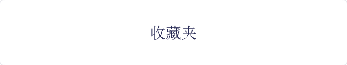
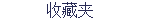

19 年 10 月 18 日

列出您在万维网上经常光顾的网站。您可以添加指向其他网站的超链接，也可以将已有的网站替换为所需的网站，方法是: 选中已有网站的文本，再选择“插入”菜单内的“超链接”命令。
Example.com
请在此说明您添加的超链接，以便网站访问者了解网站中包含的内容。
Example.org
请在此说明您添加的超链接，以便网站访问者了解网站中包含的内容。
Example.net
请在此说明您添加的超链接，以便网站访问者了解网站中包含的内容。
主页
|
测试乱码
|
收藏夹
|
图片库
上次更新时间 19 年 10 月 18 日